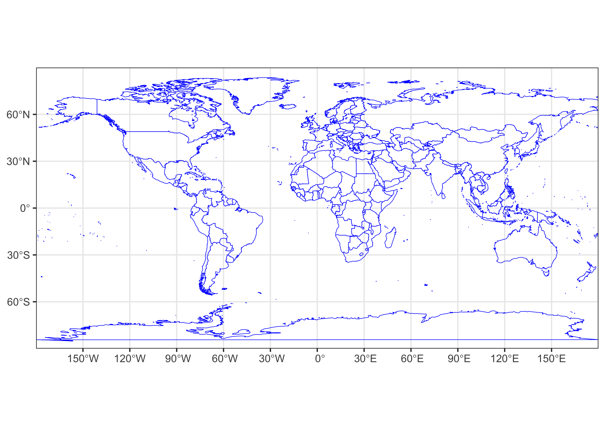
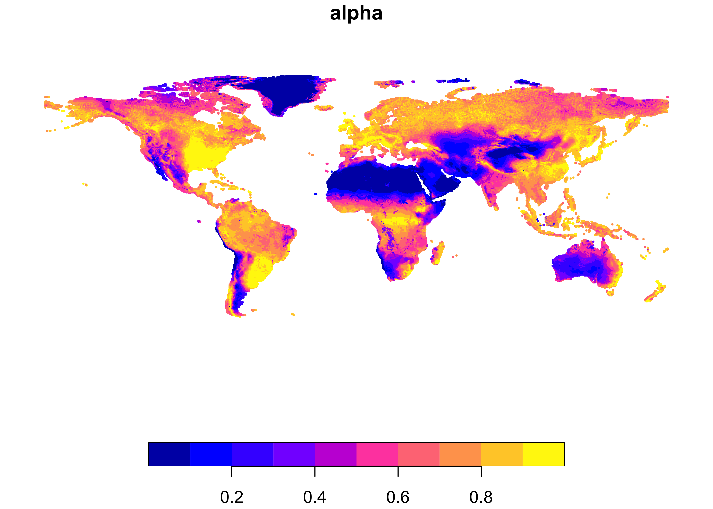
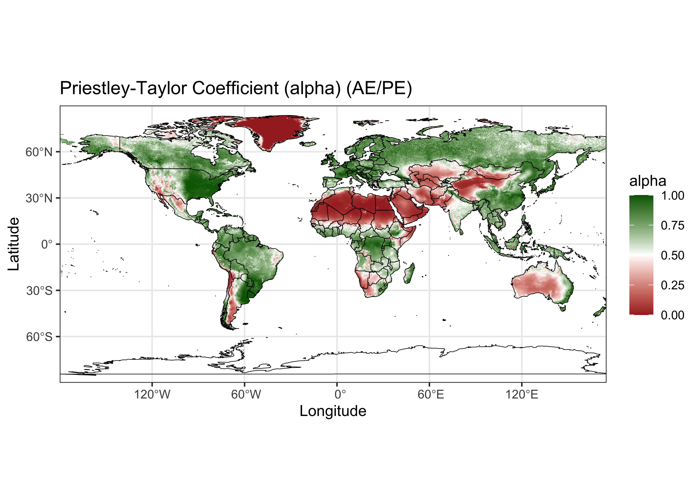

This RMarkdown document describes reading a netCDF file consisting of
several bioclimatic variables, and plots one of them,
alpha.
{maps} packageRead a map file of world coastlines and countries, and convert to an
sf object.
# ggplot map of world_outline
ggplot() +
geom_sf(data = world_otl_sf, fill = NA, col = "blue") +
scale_x_continuous(breaks = seq(-180, 180, 30)) +
scale_y_continuous(breaks = seq(-90, 90, 30)) +
coord_sf(xlim = c(-180, +180), ylim = c(-90, 90), expand = FALSE) +
theme_bw()
Now read in alpha from a netCDF file of bioclimatic variables using stars.
# read alpha (AE/PE)
# change path as necessary
nc_path <- "/Users/bartlein/Projects/RESS/data/nc_files/"
nc_name <- "cru10min30_bio.nc"
nc_file <- paste(nc_path, nc_name, sep="")
alpha <- read_ncdf(nc_file, var="alpha", proxy = FALSE)## Warning: ignoring unrecognized unit: ratio## No projection information found in nc file.
## Coordinate variable units found to be degrees,
## assuming WGS84 Lat/Lon.List alpha to show contents of the object.
## stars object with 2 dimensions and 1 attribute
## attribute(s):
## Min. 1st Qu. Median Mean 3rd Qu. Max. NA's
## alpha 0 0.408 0.6539 0.5797598 0.7945 1 196239
## dimension(s):
## from to offset delta refsys x/y
## lon 1 720 -180 0.5 WGS 84 [x]
## lat 1 360 -90 0.5 WGS 84 [y]Convert the stars object to an sf
object:
## Simple feature collection with 62961 features and 1 field
## Geometry type: POINT
## Dimension: XY
## Bounding box: xmin: -179.75 ymin: -89.75 xmax: 179.75 ymax: 89.75
## Geodetic CRS: WGS 84
## First 10 features:
## alpha geometry
## 1 0.9326 POINT (-67.25 -55.75)
## 2 0.9869 POINT (-69.75 -55.25)
## 3 0.9958 POINT (-69.25 -55.25)
## 4 0.9481 POINT (-68.75 -55.25)
## 5 0.8717 POINT (-68.25 -55.25)
## 6 0.8415 POINT (-67.75 -55.25)
## 7 0.8302 POINT (-67.25 -55.25)
## 8 0.7873 POINT (-71.75 -54.75)
## 9 0.9696 POINT (-70.75 -54.75)
## 10 0.9924 POINT (-70.25 -54.75)
Do some setting up befor plotting.
# setup for plotting alpha
# make a data.frame
lon <- st_coordinates(alpha_sf)[,1]
lat <- st_coordinates(alpha_sf)[,2]
alpha <- as.vector(alpha_sf)
alpha_df <- data.frame(lon, lat, alpha)
dim(alpha_df)## [1] 62961 4## lon lat alpha geometry
## 1 -67.25 -55.75 0.9326 POINT (-67.25 -55.75)
## 2 -69.75 -55.25 0.9869 POINT (-69.75 -55.25)
## 3 -69.25 -55.25 0.9958 POINT (-69.25 -55.25)
## 4 -68.75 -55.25 0.9481 POINT (-68.75 -55.25)
## 5 -68.25 -55.25 0.8717 POINT (-68.25 -55.25)
## 6 -67.75 -55.25 0.8415 POINT (-67.75 -55.25)Set axis labels or breaks:
Make a {ggplot2} maps of alpha.
# ggplot2 map of alpha
ggplot() +
geom_tile(data = alpha_df, aes(x = lon, y = lat, fill = alpha)) +
scale_fill_gradient2(low = "brown", mid="white", high = "darkgreen", midpoint = 0.50) +
geom_sf(data = world_otl_sf, col = "black", fill = NA) +
coord_sf(xlim = c(-180, +175.0), ylim = c(-90, 90), expand = FALSE) +
scale_x_continuous(breaks = breaks_x) +
scale_y_continuous(breaks = breaks_y) +
labs(x = "Longitude", y = "Latitude", title="Priestley-Taylor Coefficient (alpha) (AE/PE)", fill="alpha") +
theme_bw()
(A few paragraphs on map patterns, trends, etc.)